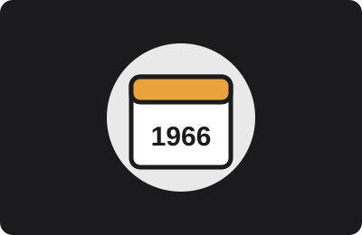

Our Mission
To empower the youth of Durban through direct community service, working hand-in-hand with local charities and under-resourced schools.
Sixty years of young people showing up for their city.

Durban Youth Council (DYC) was established in 1966, originally launched as a project of Junior Chamber International South Africa's Durban chapter. What began as a small group of young volunteers has grown into one of Durban's longest-running youth service organisations, built entirely on the time and energy its members give freely.
Today DYC continues that same tradition: ordinary young Durbanites giving their weekends to causes that need extra hands, from classrooms to care homes.
To empower the youth of Durban through direct community service, working hand-in-hand with local charities and under-resourced schools.
A Durban where every young person has both the opportunity to serve their community and the support of one when they need it.
DYC is run by a volunteer management committee elected by its members each year, supported by programme coordinators for schools, charity partnerships and youth leadership training.
All committee members and coordinators are volunteers themselves, giving their time to ensure that DYC continues to run smoothly and serve the Durban community.